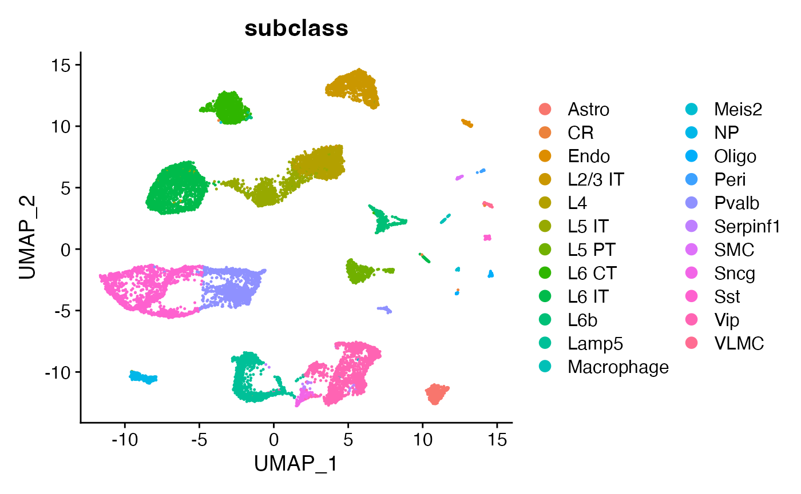
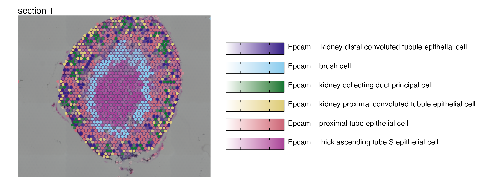
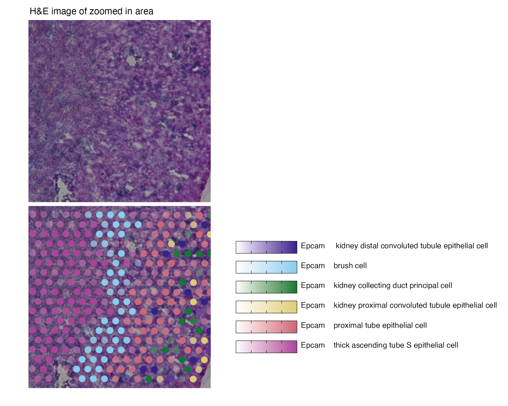

Cell type mapping with NNLS
Last compiled: 15 March 2023
cell_type_mapping_with_NNLS.rmdCell type mapping with SRT data refers to a set of methods which
allows you to infer the quantity of cells from SRT expression profiles.
semla offers a quick method based on Non-Negative Least
Squares to infer cell type proportions directly from Visium spot
expression profiles. We utilize the NNLS method implemented in the RcppML v0.3.7
package available on CRAN: https://cran.r-project.org/web/packages/RcppML/index.html.
Please ensure you have the correct version installed before proceeding
with this tutorial.
In this tutorial, we’ll take a look at two examples. First, we have two tissue sections of a mouse brain and a single cell RNA-seq dataset from the Allen Brain Atlas. In the second example, we have a mouse kidney section and single cell RNA-seq data from the Tabula Muris Senis.
library(semla)
library(tibble)
library(dplyr)
if (!requireNamespace('TabulaMurisSenisData', quietly = TRUE)) {
BiocManager::install("TabulaMurisSenisData")
}
library(TabulaMurisSenisData)
library(SingleCellExperiment)
library(Seurat)
library(purrr)
library(patchwork)
library(ggplot2)Mouse brain
For this tutorial, we will use a single-cell data set from the Allen Brain Atlas. You can check the code chunk below or follow this link to download it manually.
options(timeout=200)
tmpdir <- "." # Set current wd or change to tmpdir()
dir.create(paste0(tmpdir, "/mousebrain"))
targetdir <- paste0(tmpdir, "/mousebrain")
dir.create(paste0(targetdir, "/single-cell"))
destfile <- paste0(targetdir, "/single-cell/allen_brain.rds")
download.file("https://www.dropbox.com/s/cuowvm4vrf65pvq/allen_cortex.rds?dl=1", destfile = destfile)We will also need to download the 10x Visium data from 10x Genomics website. You can download the files directly with R by following the code chunk below or download the data directly from here.
dir.create(paste0(targetdir, "/visium"))
# Download section 1
dir.create(paste0(targetdir, "/visium/S1"))
download.file(url = "https://cf.10xgenomics.com/samples/spatial-exp/1.0.0/V1_Mouse_Brain_Sagittal_Anterior/V1_Mouse_Brain_Sagittal_Anterior_filtered_feature_bc_matrix.h5",
destfile = paste0(targetdir, "/visium/S1/filtered_feature_bc_matrix.h5"))
download.file(url = "https://cf.10xgenomics.com/samples/spatial-exp/1.0.0/V1_Mouse_Brain_Sagittal_Anterior/V1_Mouse_Brain_Sagittal_Anterior_spatial.tar.gz",
destfile = paste0(targetdir, "/visium/S1/spatial.tar.gz"))
untar(tarfile = paste0(targetdir, "/visium/S1/spatial.tar.gz"),
exdir = paste0(targetdir, "/visium/S1/"))
file.remove(paste0(targetdir, "/visium/S1/spatial.tar.gz"))
# Download section 2
dir.create(paste0(targetdir, "/visium/S2"))
download.file(url = "https://cf.10xgenomics.com/samples/spatial-exp/1.0.0/V1_Mouse_Brain_Sagittal_Posterior/V1_Mouse_Brain_Sagittal_Posterior_filtered_feature_bc_matrix.h5",
destfile = paste0(targetdir, "/visium/S2/filtered_feature_bc_matrix.h5"))
download.file(url = "https://cf.10xgenomics.com/samples/spatial-exp/1.0.0/V1_Mouse_Brain_Sagittal_Posterior/V1_Mouse_Brain_Sagittal_Posterior_spatial.tar.gz",
destfile = paste0(targetdir, "/visium/S2/spatial.tar.gz"))
untar(tarfile = paste0(targetdir, "/visium/S2/spatial.tar.gz"),
exdir = paste0(targetdir, "/visium/S2/"))
file.remove(paste0(targetdir, "/visium/S2/spatial.tar.gz"))Load Visium data with semla into a Seurat object. The following steps
assumes that the mouse brain 10x Visium data is located in
./mousebrain/visium/.
# Assemble spaceranger output files
samples <- Sys.glob("./mousebrain/visium/*/filtered_feature_bc_matrix.h5")
imgs <- Sys.glob("./mousebrain/visium/*/spatial/tissue_hires_image.png")
spotfiles <- Sys.glob("./mousebrain/visium/*/spatial/tissue_positions_list.csv")
json <- Sys.glob("./mousebrain/visium/*/spatial/scalefactors_json.json")
infoTable <- tibble(samples, imgs, spotfiles, json,
section_id = paste0("section_", 1:2))
# Create Seurat object with 1 Sagittal Anterior section and 1 Sagittal Posterior section
se_brain_spatial <- ReadVisiumData(infoTable)Load single-cell data
se_allen <- readRDS("./mousebrain/single-cell/allen_brain.rds")Normalize data
Here we will apply the same log-normalization procedure to both the
10x Visium data (se_brain_spatial) and to the single-cell
data (se_brain_singlecell). We set the number of variable
features quite high because later on we will use the intersect between
the variable features in the single-cell data and the variable features
in the 10x Visium data for NNLS. The NNLS method is quite fast so there
is actually no need to select only a subset of features. Instead, we can
just use all genes that are shared across the single-cell and 10x Visium
data.
# Normalize data and find variable features for Visium data
se_brain_spatial <- se_brain_spatial |>
NormalizeData() |>
FindVariableFeatures(nfeatures = 10000)
# Normalize data and run vanilla analysis to create UMAP embedding
se_allen <- se_allen |>
NormalizeData() |>
FindVariableFeatures() |>
ScaleData() |>
RunPCA() |>
RunUMAP(reduction = "pca", dims = 1:30)
# Rerun FindVariableFeatures to increase the number before cell type deconvolution
se_allen <- se_allen |>
FindVariableFeatures(nfeatures = 10000)We can visualize the available cell types in our UMAP embedding of the cells. We have access to 23 annotated cell types, including L2-L6 layer neurons which have a distinct spatial distribution in the tissue.
DimPlot(se_allen, group.by = "subclass")
Run NNLS
The RunNNLS() method requires a normalized
Seurat object with 10x Visium data and a a normalized
Seurat object with single-cell data. The
groups argument defines where the cell type labels should
be taken from in the single-cell Seurat object. In our
single-cell Seurat object, the labels are stored in the
“subclass” column.
DefaultAssay(se_brain_spatial) <- "Spatial"
ti <- Sys.time()
se_brain_spatial <- RunNNLS(object = se_brain_spatial,
singlecell_object = se_allen,
groups = "subclass")## ## ── Predicting cell type proportions ──## ## ℹ Fetching data from Seurat objects## → Filtering out features that are only present in one data set## → Kept 3378 features for deconvolution## Loading required namespace: RcppML## ℹ Preparing data for NNLS## → Downsampling scRNA-seq data to include a maximum of 50 cells per cell type## → Cell type(s) CR have too few cells (<10) and will be excluded## → Kept 22 cell types after filtering## → Calculating cell type expression profiles## ℹ Predicting cell type proportions with NNLS for 22 cell types## ℹ Returning results in a new 'Assay' named 'celltypeprops'## ℹ Setting default assay to 'celltypeprops'## ✔ Finished## [1] "RunNNLS completed in 5.85 seconds"
# Check available cell types
rownames(se_brain_spatial)## [1] "Astro" "Endo" "L2/3 IT" "L4" "L5 IT"
## [6] "L5 PT" "L6 CT" "L6 IT" "L6b" "Lamp5"
## [11] "Macrophage" "Meis2" "NP" "Oligo" "Peri"
## [16] "Pvalb" "SMC" "Serpinf1" "Sncg" "Sst"
## [21] "VLMC" "Vip"NB: the CR cell type was discarded because the number of cell was
lower than 10. 10 is the lower limit for the allowed number of cells per
cell type but this can be overridden with
minCells_per_celltype.
The plots below show the spatial distributions of proportions for a selected set of cell types.
# Plot selected cell types
DefaultAssay(se_brain_spatial) <- "celltypeprops"
selected_celltypes <- c("L2/3 IT", "L4", "L5 IT",
"L5 PT", "L6 CT", "L6 IT", "L6b",
"Oligo", "Pvalb", "Meis2", "Astro",
"VLMC", "SMC")
se_brain_spatial <- LoadImages(se_brain_spatial, image_height = 1e3)## ## ── Loading H&E images ──## ## ℹ Loading image from ./mousebrain/visium/S1/spatial/tissue_hires_image.png## ℹ Scaled image from 1998x2000 to 1000x1001 pixels## ℹ Loading image from ./mousebrain/visium/S2/spatial/tissue_hires_image.png## ℹ Scaled image from 1998x2000 to 1000x1001 pixels## ℹ Saving loaded H&E images as 'rasters' in Seurat object
plots <- lapply(seq_along(selected_celltypes), function(i) {
MapFeatures(se_brain_spatial, pt_size = 1.3,
features = selected_celltypes[i], image_use = "raw",
arrange_features = "row", scale = "shared",
override_plot_dims = TRUE,
colors = RColorBrewer::brewer.pal(n = 9, name = "Spectral") |> rev(),
scale_alpha = TRUE) +
plot_layout(guides = "collect") &
theme(legend.position = "right", legend.margin = margin(b = 50),
legend.text = element_text(angle = 0),
plot.title = element_blank())
}) |> setNames(nm = selected_celltypes)## Warning: Returning more (or less) than 1 row per `summarise()` group was deprecated in
## dplyr 1.1.0.
## ℹ Please use `reframe()` instead.
## ℹ When switching from `summarise()` to `reframe()`, remember that `reframe()`
## always returns an ungrouped data frame and adjust accordingly.
## ℹ The deprecated feature was likely used in the semla package.
## Please report the issue to the authors.Visualize multiple cell types
We can also visualize some of these cell types in one single plot
with MapMultipleFeatures().
# Load H&E images
se_brain_spatial <- se_brain_spatial |>
LoadImages()
# Plot multiple features
MapMultipleFeatures(se_brain_spatial,
image_use = "raw",
pt_size = 2, max_cutoff = 0.99,
override_plot_dims = TRUE,
colors = c("#332288", "#88CCEE", "#44AA99", "#117733", "#DDCC77", "#CC6677","#AA4499"),
features = selected_celltypes[1:7]) +
plot_layout(guides = "collect")Cell type co-localization
By computing the pair-wise correlation between cell types across spots, we can get an idea of which cell types often appear together in the same spots.
cor_matrix <- FetchData(se_brain_spatial, selected_celltypes) |>
mutate_all(~ if_else(.x<0.1, 0, .x)) |> # Filter lowest values (-> set as 0)
cor()
diag(cor_matrix) <- NA
max_val <- max(cor_matrix, na.rm = T)
cols <- RColorBrewer::brewer.pal(7, "RdYlBu") |> rev(); cols[4] <- "white"
pheatmap::pheatmap(cor_matrix,
breaks = seq(-max_val, max_val, length.out = 100),
color=colorRampPalette(cols)(100),
cellwidth = 14, cellheight = 14,
treeheight_col = 10, treeheight_row = 10,
main = "Cell type correlation\nwithin spots")
We can also use the predicted cell type proportions to compute factors using NMF, and thereby summarizing the cell types presence within the same location into a set of predefined factors. Each factor can be viewed as a niche of a certain cell type composition.
nmf_data <- FetchData(se_brain_spatial, selected_celltypes) |>
RcppML::nmf(k = 10, verbose = F)
nmf_data_h <- nmf_data$h |> as.data.frame()
rownames(nmf_data_h) <- paste0("Factor_", 1:10)
colnames(nmf_data_h) <- selected_celltypes
nmf_data_h <- nmf_data_h |>
mutate_at(colnames(nmf_data_h),
~(scale(., center = FALSE, scale = max(., na.rm = TRUE)/1)))
nmf_data_h$Factor <- rownames(nmf_data_h) |>
factor(levels = paste0("Factor_", 1:10))
nmf_data_h_df <- nmf_data_h |>
tidyr::pivot_longer(cols = all_of(selected_celltypes),
names_to = "Cell",
values_to = "Weight")
ggplot(nmf_data_h_df, aes(x=Factor, y=Cell, size=Weight, color=Weight)) +
geom_point() +
labs(title="Cell type contribution", x="Factor", y = "Cell type",
color = "", size = "Scaled weight") +
scale_color_viridis_c(direction = -1, option = "magma") +
theme_bw() +
theme(axis.text.x = element_text(angle=45, hjust=1),
panel.grid = element_blank())
Mouse kidney
In the second example, we’ll look at data from mouse kidney. We can
obtain the single-cell data with the TabulaMurisSenisData R
package from bioconductor. Let’s load the data and create a
Seurat object from it.
sce <- TabulaMurisSenisDroplet(tissues = "Kidney")$Kidney
umis <- as(counts(sce), "dgCMatrix")
se_kidney_singlecell <- CreateSeuratObject(counts = umis, meta.data = colData(sce) |> as.data.frame())The 10x Visium mouse kidney data can be downloaded from the 10x genomics website.
dir.create(paste0(tmpdir, "/kidney"))
targetdir <- paste0(tmpdir, "/kidney")
dir.create(paste0(targetdir, "/visium"))
# Download section 1
download.file(url = "https://cf.10xgenomics.com/samples/spatial-exp/1.1.0/V1_Mouse_Kidney/V1_Mouse_Kidney_filtered_feature_bc_matrix.h5",
destfile = paste0(targetdir, "/visium/filtered_feature_bc_matrix.h5"))
download.file(url = "https://cf.10xgenomics.com/samples/spatial-exp/1.1.0/V1_Mouse_Kidney/V1_Mouse_Kidney_spatial.tar.gz",
destfile = paste0(targetdir, "/visium/spatial.tar.gz"))
untar(tarfile = paste0(targetdir, "/visium/spatial.tar.gz"),
exdir = paste0(targetdir, "/visium/"))
file.remove(paste0(targetdir, "/visium/spatial.tar.gz"))
samples <- "./kidney/visium/filtered_feature_bc_matrix.h5"
imgs <- "./kidney/visium/spatial/tissue_hires_image.png"
spotfiles <- "./kidney/visium/spatial/tissue_positions_list.csv"
json <- "./kidney/visium/spatial/scalefactors_json.json"
infoTable <- tibble::tibble(samples, imgs, spotfiles, json)
se_kidney_spatial <- ReadVisiumData(infoTable)Normalize data
We apply the same normalization procedure to
se_kidney_spatial and se_kidney_singlecell and
run FindVariableFeatures() to detect the top most variable
genes.
se_kidney_spatial <- se_kidney_spatial |>
NormalizeData() |>
FindVariableFeatures(nfeatures = 10000)For the single-cell kidney data, we’ll also filter the data prior to normalization to include cells collected at age 18m and remove cells with labels “nan” and “CD45”. This leaves us with 17 cell types.
keep_cells <- colnames(se_kidney_singlecell)[se_kidney_singlecell$age == "18m" & (!se_kidney_singlecell$free_annotation %in% c("nan", "CD45"))]
se_kidney_singlecell <- subset(se_kidney_singlecell, cells = keep_cells)
se_kidney_singlecell <- se_kidney_singlecell |>
NormalizeData() |>
FindVariableFeatures() |>
ScaleData() |>
RunPCA() |>
RunUMAP(reduction = "pca", dims = 1:30)
se_kidney_singlecell <- se_kidney_singlecell |>
FindVariableFeatures(nfeatures = 10000)Run NNLS
Again, the RunNNLS() method requires a single-cell
Seurat object and a 10x Visium Seurat object.
The cell type annotations are stored in the “free_annotation”
column.
ti <- Sys.time()
DefaultAssay(se_kidney_spatial) <- "Spatial"
se_kidney_spatial <- RunNNLS(object = se_kidney_spatial,
singlecell_object = se_kidney_singlecell,
groups = "free_annotation")## ## ── Predicting cell type proportions ──## ## ℹ Fetching data from Seurat objects## → Filtering out features that are only present in one data set## → Kept 4993 features for deconvolution## ℹ Preparing data for NNLS## → Downsampling scRNA-seq data to include a maximum of 50 cells per cell type## → Cell type(s) CD45 NK cell,CD45 plasma cell have too few cells (<10) and will be excluded## → Kept 15 cell types after filtering## → Calculating cell type expression profiles## ℹ Predicting cell type proportions with NNLS for 15 cell types## ℹ Returning results in a new 'Assay' named 'celltypeprops'## ℹ Setting default assay to 'celltypeprops'## ✔ Finished## [1] "RunNNLS finished in 0.55 seconds"
# Check available cell types
rownames(se_kidney_spatial)## [1] "CD45 B cell"
## [2] "CD45 T cell"
## [3] "CD45 macrophage"
## [4] "Epcam kidney distal convoluted tubule epithelial cell"
## [5] "Epcam brush cell"
## [6] "Epcam kidney collecting duct principal cell"
## [7] "Epcam kidney proximal convoluted tubule epithelial cell"
## [8] "Epcam podocyte"
## [9] "Epcam proximal tube epithelial cell"
## [10] "Epcam thick ascending tube S epithelial cell"
## [11] "Pecam Kidney cortex artery cell"
## [12] "Pecam fenestrated capillary endothelial"
## [13] "Pecam kidney capillary endothelial cell"
## [14] "Stroma fibroblast"
## [15] "Stroma kidney mesangial cell"NB: two cell types were discarded as they didn’t pass the minimum allowed cells per cell type threshold. The cell types discarded were NK cells and plasma cells.
# Plot selected cell types
DefaultAssay(se_kidney_spatial) <- "celltypeprops"
selected_celltypes <- c("Epcam kidney distal convoluted tubule epithelial cell",
"Epcam brush cell",
"Epcam kidney collecting duct principal cell",
"Epcam kidney proximal convoluted tubule epithelial cell",
"Epcam podocyte",
"Epcam proximal tube epithelial cell",
"Epcam thick ascending tube S epithelial cell",
"Pecam fenestrated capillary endothelial",
"Pecam kidney capillary endothelial cell",
"Stroma kidney mesangial cell")
plots <- lapply(seq_along(selected_celltypes), function(i) {
MapFeatures(se_kidney_spatial, pt_size = 1.3,
features = selected_celltypes[i],
override_plot_dims = TRUE) &
theme(plot.title = element_blank())
}) |> setNames(nm = selected_celltypes)
Visualize multiple cell types
We can select some of these cell types and visualize them in one plot
# Load H&E images
se_kidney_spatial <- se_kidney_spatial |>
LoadImages()
# Plot multiple features
MapMultipleFeatures(se_kidney_spatial,
image_use = "raw",
pt_size = 2, max_cutoff = 0.95,
override_plot_dims = TRUE,
colors = c("#332288", "#88CCEE", "#117733", "#DDCC77", "#CC6677","#AA4499"),
features = selected_celltypes[c(1, 2, 3, 4, 6, 7)]) +
plot_layout(guides = "collect")
Or zoom in on a region of interest
# Reload H&E image in higher resolution
se_kidney_spatial <- LoadImages(se_kidney_spatial, image_height = 1500)
# Plot H&E image
rst <- GetImages(se_kidney_spatial)[[1]]
p1 <- ggplot() +
ggtitle("H&E image of zoomed in area") +
theme(plot.title = element_text(hjust = 0.2)) +
inset_element(p = rst[(0.5*nrow(rst)):(0.7*nrow(rst)), (0.5*ncol(rst)):(0.7*ncol(rst))],
left = 0, bottom = 0, right = 1, top = 1)
# Plot multiple features with zoom
p2 <- MapMultipleFeatures(se_kidney_spatial,
image_use = "raw",
pt_size = 4.5, max_cutoff = 0.95,
crop_area = c(0.5, 0.5, 0.7, 0.7),
colors = c("#332288", "#88CCEE", "#117733", "#DDCC77", "#CC6677","#AA4499"),
features = selected_celltypes[c(1, 2, 3, 4, 6, 7)]) +
plot_layout(guides = "collect") &
theme(plot.title = element_blank())
p1 / p2
Package versions
semla: 0.1.0RcppML: 0.3.7
Session info
## R version 4.2.1 (2022-06-23)
## Platform: x86_64-apple-darwin13.4.0 (64-bit)
## Running under: macOS Big Sur ... 10.16
##
## Matrix products: default
## BLAS/LAPACK: /Users/ludviglarsson/miniconda3/envs/R4.2/lib/libopenblasp-r0.3.21.dylib
##
## locale:
## [1] en_US.UTF-8/en_US.UTF-8/en_US.UTF-8/C/en_US.UTF-8/en_US.UTF-8
##
## attached base packages:
## [1] stats4 stats graphics grDevices utils datasets methods
## [8] base
##
## other attached packages:
## [1] patchwork_1.1.2 purrr_1.0.1
## [3] SingleCellExperiment_1.18.0 SummarizedExperiment_1.26.1
## [5] Biobase_2.56.0 GenomicRanges_1.48.0
## [7] GenomeInfoDb_1.32.4 IRanges_2.30.1
## [9] S4Vectors_0.34.0 BiocGenerics_0.42.0
## [11] MatrixGenerics_1.8.1 matrixStats_0.62.0
## [13] TabulaMurisSenisData_1.2.0 tibble_3.1.8
## [15] semla_0.1.0 ggplot2_3.4.1
## [17] dplyr_1.1.0 SeuratObject_4.1.3
## [19] Seurat_4.3.0
##
## loaded via a namespace (and not attached):
## [1] utf8_1.2.2 spatstat.explore_3.0-5
## [3] reticulate_1.26 tidyselect_1.2.0
## [5] RSQLite_2.2.17 AnnotationDbi_1.58.0
## [7] htmlwidgets_1.5.4 grid_4.2.1
## [9] Rtsne_0.16 munsell_0.5.0
## [11] codetools_0.2-18 ragg_1.2.2
## [13] ica_1.0-3 future_1.27.0
## [15] miniUI_0.1.1.1 withr_2.5.0
## [17] spatstat.random_3.0-1 colorspace_2.0-3
## [19] progressr_0.10.1 filelock_1.0.2
## [21] highr_0.9 knitr_1.39
## [23] rstudioapi_0.14 ROCR_1.0-11
## [25] tensor_1.5 listenv_0.8.0
## [27] labeling_0.4.2 GenomeInfoDbData_1.2.8
## [29] RcppML_0.3.7 polyclip_1.10-0
## [31] pheatmap_1.0.12 farver_2.1.1
## [33] bit64_4.0.5 rhdf5_2.40.0
## [35] rprojroot_2.0.3 parallelly_1.32.1
## [37] vctrs_0.5.2 generics_0.1.3
## [39] xfun_0.32 BiocFileCache_2.4.0
## [41] R6_2.5.1 DelayedArray_0.22.0
## [43] bitops_1.0-7 rhdf5filters_1.8.0
## [45] spatstat.utils_3.0-1 cachem_1.0.6
## [47] assertthat_0.2.1 promises_1.2.0.1
## [49] scales_1.2.1 gtable_0.3.0
## [51] globals_0.16.0 goftest_1.2-3
## [53] rlang_1.0.6 zeallot_0.1.0
## [55] systemfonts_1.0.4 splines_4.2.1
## [57] lazyeval_0.2.2 spatstat.geom_3.0-3
## [59] BiocManager_1.30.18 yaml_2.3.5
## [61] reshape2_1.4.4 abind_1.4-5
## [63] httpuv_1.6.5 tools_4.2.1
## [65] ellipsis_0.3.2 jquerylib_0.1.4
## [67] RColorBrewer_1.1-3 ggridges_0.5.3
## [69] Rcpp_1.0.9 plyr_1.8.7
## [71] zlibbioc_1.42.0 RCurl_1.98-1.8
## [73] dbscan_1.1-10 deldir_1.0-6
## [75] pbapply_1.5-0 cowplot_1.1.1
## [77] zoo_1.8-10 ggrepel_0.9.3
## [79] cluster_2.1.4 fs_1.5.2
## [81] magrittr_2.0.3 data.table_1.14.2
## [83] magick_2.7.3 scattermore_0.8
## [85] lmtest_0.9-40 RANN_2.6.1
## [87] ggnewscale_0.4.8 fitdistrplus_1.1-8
## [89] shinyjs_2.1.0 mime_0.12
## [91] evaluate_0.16 xtable_1.8-4
## [93] gridExtra_2.3 compiler_4.2.1
## [95] KernSmooth_2.23-20 crayon_1.5.1
## [97] htmltools_0.5.4 later_1.3.0
## [99] tidyr_1.3.0 DBI_1.1.3
## [101] ExperimentHub_2.4.0 dbplyr_2.2.1
## [103] MASS_7.3-58.1 rappdirs_0.3.3
## [105] Matrix_1.5-3 cli_3.4.1
## [107] gdata_2.18.0.1 parallel_4.2.1
## [109] igraph_1.3.4 forcats_0.5.2
## [111] pkgconfig_2.0.3 pkgdown_2.0.6
## [113] sp_1.5-1 plotly_4.10.0
## [115] spatstat.sparse_3.0-0 bslib_0.4.0
## [117] XVector_0.36.0 stringr_1.5.0
## [119] digest_0.6.29 sctransform_0.3.5
## [121] RcppAnnoy_0.0.19 spatstat.data_3.0-0
## [123] Biostrings_2.64.1 rmarkdown_2.15
## [125] leiden_0.4.2 uwot_0.1.14
## [127] curl_4.3.2 gtools_3.9.3
## [129] shiny_1.7.4 lifecycle_1.0.3
## [131] nlme_3.1-159 jsonlite_1.8.3
## [133] Rhdf5lib_1.18.2 desc_1.4.1
## [135] viridisLite_0.4.1 fansi_1.0.3
## [137] pillar_1.8.1 lattice_0.20-45
## [139] KEGGREST_1.36.3 fastmap_1.1.0
## [141] httr_1.4.4 survival_3.4-0
## [143] interactiveDisplayBase_1.34.0 glue_1.6.2
## [145] png_0.1-7 BiocVersion_3.15.2
## [147] bit_4.0.4 stringi_1.7.8
## [149] sass_0.4.2 HDF5Array_1.24.2
## [151] blob_1.2.3 textshaping_0.3.6
## [153] AnnotationHub_3.4.0 memoise_2.0.1
## [155] irlba_2.3.5 future.apply_1.9.0